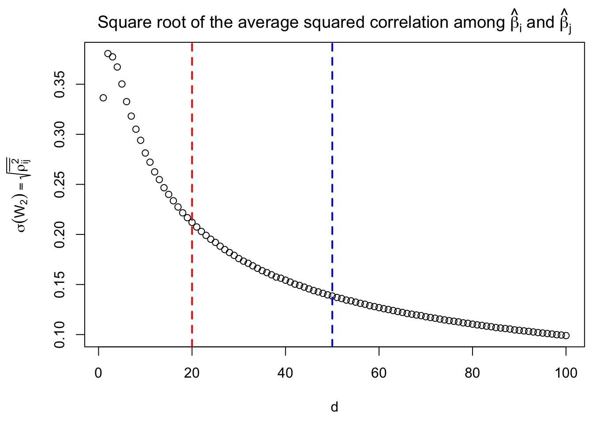
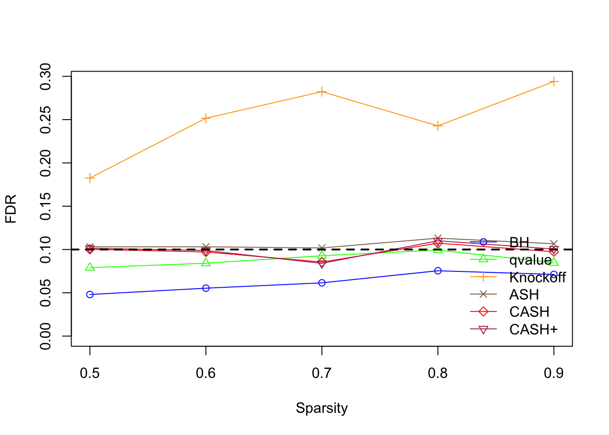
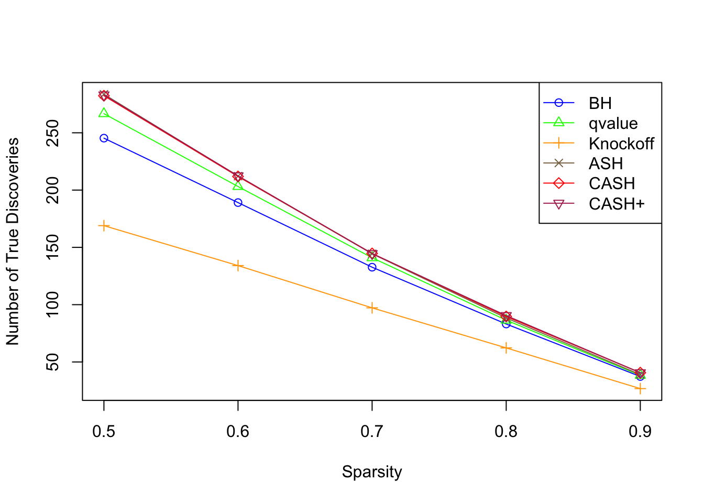
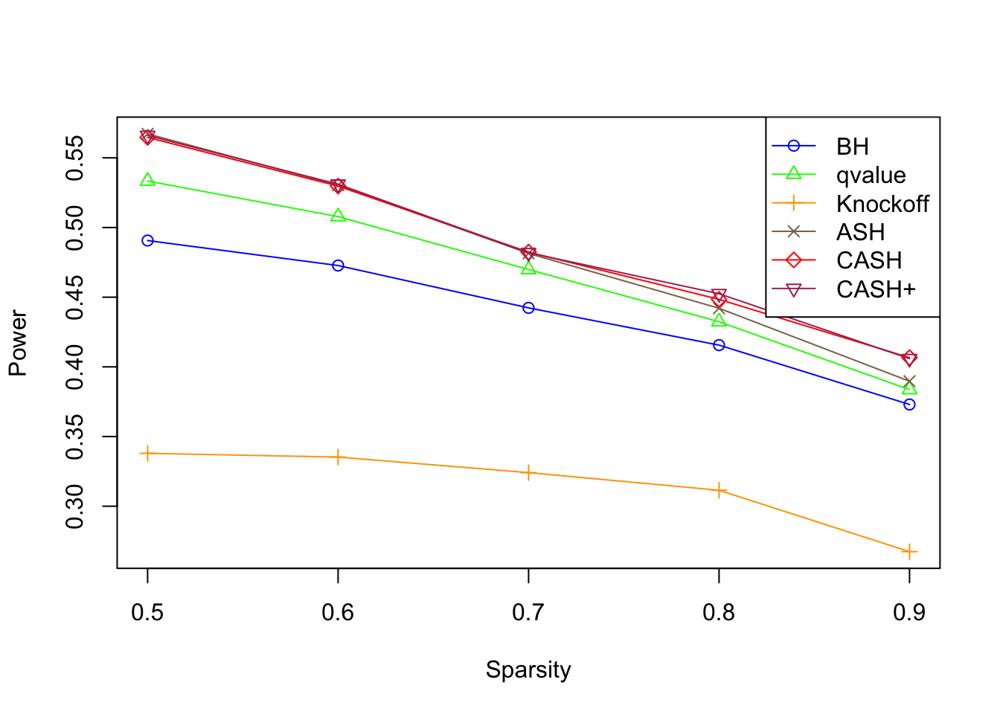
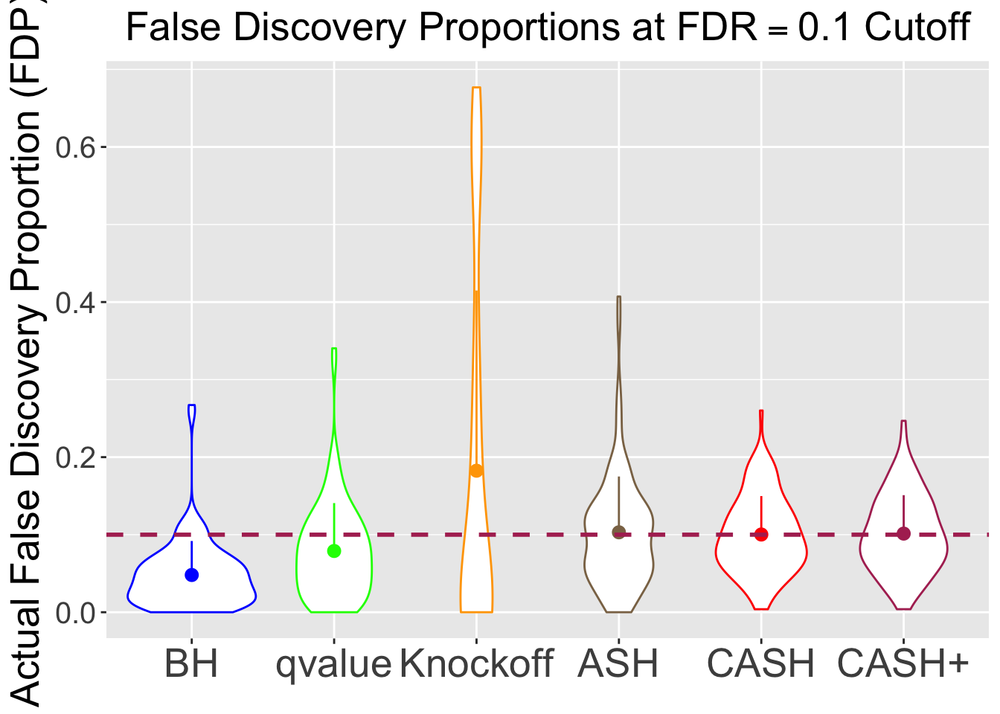
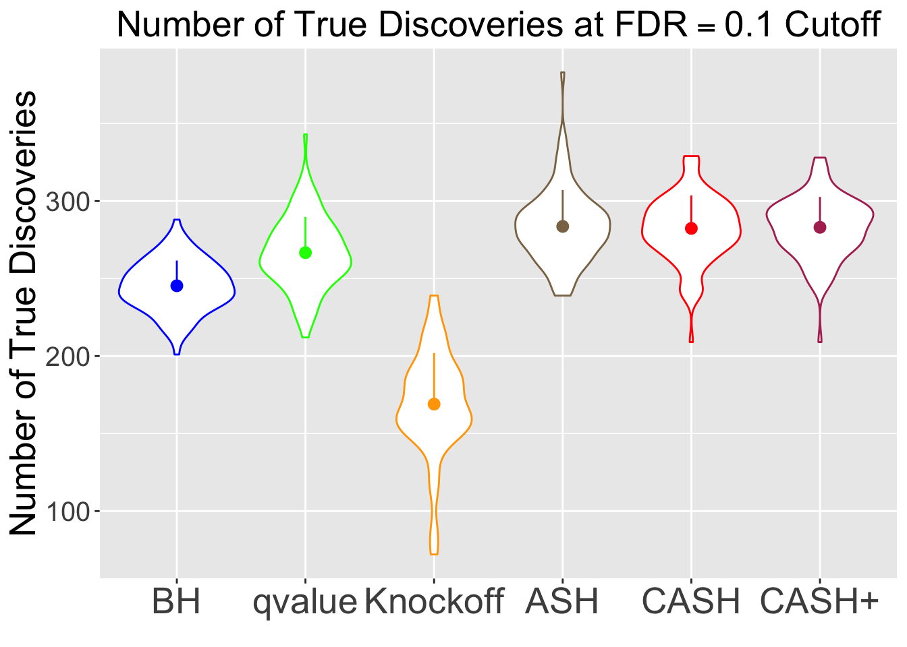
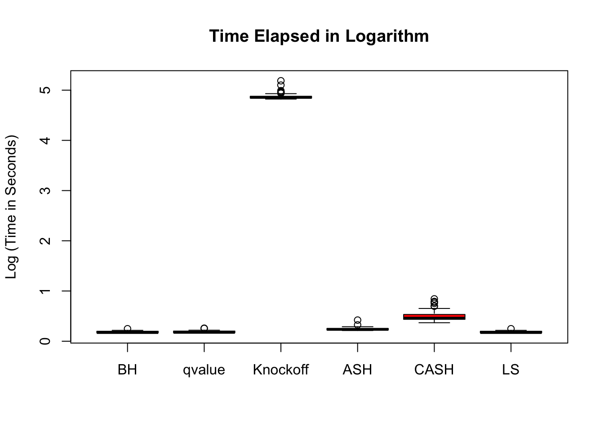
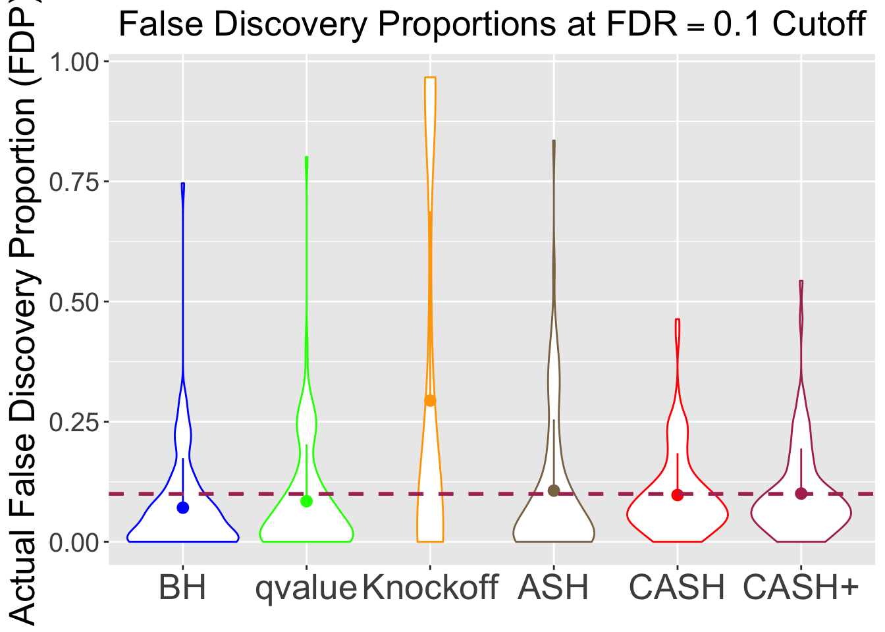
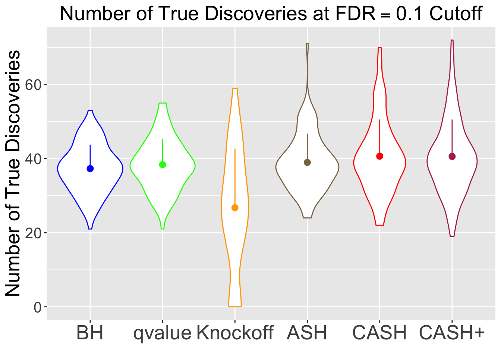
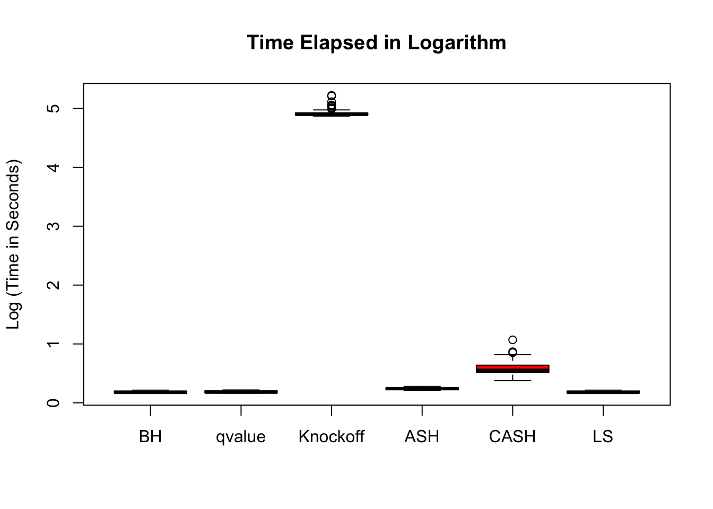

Comparison with Knockoff: Start from \(\Sigma_{\hat\beta}\)
Lei Sun
2018-01-27
Last updated: 2018-05-15
workflowr checks: (Click a bullet for more information)-
✔ R Markdown file: up-to-date
Great! Since the R Markdown file has been committed to the Git repository, you know the exact version of the code that produced these results.
-
✔ Environment: empty
Great job! The global environment was empty. Objects defined in the global environment can affect the analysis in your R Markdown file in unknown ways. For reproduciblity it’s best to always run the code in an empty environment.
-
✔ Seed:
set.seed(12345)The command
set.seed(12345)was run prior to running the code in the R Markdown file. Setting a seed ensures that any results that rely on randomness, e.g. subsampling or permutations, are reproducible. -
✔ Session information: recorded
Great job! Recording the operating system, R version, and package versions is critical for reproducibility.
-
Great! You are using Git for version control. Tracking code development and connecting the code version to the results is critical for reproducibility. The version displayed above was the version of the Git repository at the time these results were generated.✔ Repository version: 388e65e
Note that you need to be careful to ensure that all relevant files for the analysis have been committed to Git prior to generating the results (you can usewflow_publishorwflow_git_commit). workflowr only checks the R Markdown file, but you know if there are other scripts or data files that it depends on. Below is the status of the Git repository when the results were generated:
Note that any generated files, e.g. HTML, png, CSS, etc., are not included in this status report because it is ok for generated content to have uncommitted changes.Ignored files: Ignored: .DS_Store Ignored: .Rhistory Ignored: .Rproj.user/ Ignored: analysis/.DS_Store Ignored: analysis/BH_robustness_cache/ Ignored: analysis/FDR_Null_cache/ Ignored: analysis/FDR_null_betahat_cache/ Ignored: analysis/Rmosek_cache/ Ignored: analysis/StepDown_cache/ Ignored: analysis/alternative2_cache/ Ignored: analysis/alternative_cache/ Ignored: analysis/ash_gd_cache/ Ignored: analysis/average_cor_gtex_2_cache/ Ignored: analysis/average_cor_gtex_cache/ Ignored: analysis/brca_cache/ Ignored: analysis/cash_deconv_cache/ Ignored: analysis/cash_fdr_1_cache/ Ignored: analysis/cash_fdr_2_cache/ Ignored: analysis/cash_fdr_3_cache/ Ignored: analysis/cash_fdr_4_cache/ Ignored: analysis/cash_fdr_5_cache/ Ignored: analysis/cash_fdr_6_cache/ Ignored: analysis/cash_plots_cache/ Ignored: analysis/cash_sim_1_cache/ Ignored: analysis/cash_sim_2_cache/ Ignored: analysis/cash_sim_3_cache/ Ignored: analysis/cash_sim_4_cache/ Ignored: analysis/cash_sim_5_cache/ Ignored: analysis/cash_sim_6_cache/ Ignored: analysis/cash_sim_7_cache/ Ignored: analysis/correlated_z_2_cache/ Ignored: analysis/correlated_z_3_cache/ Ignored: analysis/correlated_z_cache/ Ignored: analysis/create_null_cache/ Ignored: analysis/cutoff_null_cache/ Ignored: analysis/design_matrix_2_cache/ Ignored: analysis/design_matrix_cache/ Ignored: analysis/diagnostic_ash_cache/ Ignored: analysis/diagnostic_correlated_z_2_cache/ Ignored: analysis/diagnostic_correlated_z_3_cache/ Ignored: analysis/diagnostic_correlated_z_cache/ Ignored: analysis/diagnostic_plot_2_cache/ Ignored: analysis/diagnostic_plot_cache/ Ignored: analysis/efron_leukemia_cache/ Ignored: analysis/fitting_normal_cache/ Ignored: analysis/gaussian_derivatives_2_cache/ Ignored: analysis/gaussian_derivatives_3_cache/ Ignored: analysis/gaussian_derivatives_4_cache/ Ignored: analysis/gaussian_derivatives_5_cache/ Ignored: analysis/gaussian_derivatives_cache/ Ignored: analysis/gd-ash_cache/ Ignored: analysis/gd_delta_cache/ Ignored: analysis/gd_lik_2_cache/ Ignored: analysis/gd_lik_cache/ Ignored: analysis/gd_w_cache/ Ignored: analysis/knockoff_10_cache/ Ignored: analysis/knockoff_2_cache/ Ignored: analysis/knockoff_3_cache/ Ignored: analysis/knockoff_4_cache/ Ignored: analysis/knockoff_5_cache/ Ignored: analysis/knockoff_6_cache/ Ignored: analysis/knockoff_7_cache/ Ignored: analysis/knockoff_8_cache/ Ignored: analysis/knockoff_9_cache/ Ignored: analysis/knockoff_cache/ Ignored: analysis/knockoff_var_cache/ Ignored: analysis/marginal_z_alternative_cache/ Ignored: analysis/marginal_z_cache/ Ignored: analysis/mosek_reg_2_cache/ Ignored: analysis/mosek_reg_4_cache/ Ignored: analysis/mosek_reg_5_cache/ Ignored: analysis/mosek_reg_6_cache/ Ignored: analysis/mosek_reg_cache/ Ignored: analysis/pihat0_null_cache/ Ignored: analysis/plot_diagnostic_cache/ Ignored: analysis/poster_obayes17_cache/ Ignored: analysis/real_data_simulation_2_cache/ Ignored: analysis/real_data_simulation_3_cache/ Ignored: analysis/real_data_simulation_4_cache/ Ignored: analysis/real_data_simulation_5_cache/ Ignored: analysis/real_data_simulation_cache/ Ignored: analysis/rmosek_primal_dual_2_cache/ Ignored: analysis/rmosek_primal_dual_cache/ Ignored: analysis/seqgendiff_cache/ Ignored: analysis/simulated_correlated_null_2_cache/ Ignored: analysis/simulated_correlated_null_3_cache/ Ignored: analysis/simulated_correlated_null_cache/ Ignored: analysis/simulation_real_se_2_cache/ Ignored: analysis/simulation_real_se_cache/ Ignored: analysis/smemo_2_cache/ Ignored: data/LSI/ Ignored: docs/.DS_Store Ignored: docs/figure/.DS_Store Ignored: output/fig/
Expand here to see past versions:
| File | Version | Author | Date | Message |
|---|---|---|---|---|
| html | e05bc83 | LSun | 2018-05-12 | Update to 1.0 |
| rmd | cc0ab83 | Lei Sun | 2018-05-11 | update |
| html | 735abc6 | LSun | 2018-02-01 | knockoff |
| rmd | fe8ed5b | LSun | 2018-02-01 | knockoff comparison |
| html | 4491358 | LSun | 2018-01-30 | linear regression |
| rmd | c17f67c | LSun | 2018-01-30 | wflow_publish(c(“analysis/index.rmd”, “analysis/knockoff.rmd”, “analysis/knockoff_2.rmd”, “analysis/knockoff_3.rmd”)) |
| rmd | 56957bd | LSun | 2018-01-27 | Sigma betahat |
| html | 56957bd | LSun | 2018-01-27 | Sigma betahat |
Introduction
Similar to previous simulations, only that the design matrix \(X\) is simulated such that \(\Sigma_{\hat\beta} = \sigma_e^2(X^TX)^{-1}\) has non negligible off-diagnoal correlations.
\(d\) and \(\Sigma_{\hat\beta}\)
Let \(\Sigma_{\hat\beta} / \sigma_e^2 = B_{p \times d} \cdot B_{p \times d}^T + I\), where \(B_{i, j} \stackrel{\text{iid}}{\sim} N(0, 1)\). Then rescale the matrix such that the mean of its diagnal \(= 1\). Generate \(X_{n \times p}\) such that \((X^TX)^{-1} = \Sigma_{\hat\beta} / \sigma_e^2\).
Recall that the random coefficient of the second order of Gaussian deviative with the empirical distribution of correlated null \(W_2\) has the property \[ Var(W_2) = \bar{\rho_{ij}^2} \] We take a look at how \(d\) is related to this quantity.

Expand here to see past versions of unnamed-chunk-4-1.png:
| Version | Author | Date |
|---|---|---|
| 4491358 | LSun | 2018-01-30 |
\(\eta \in \{0.5, 0.6, 0.7, 0.8, 0.9\}\), \(\sigma_\beta / \sigma_e = 3\), \(d \sim Unif\{1, 2, \cdots, 50\}\)
Overall FDR and Power comparison

Expand here to see past versions of avg-1.png:
| Version | Author | Date |
|---|---|---|
| 4491358 | LSun | 2018-01-30 |

Expand here to see past versions of avg-2.png:
| Version | Author | Date |
|---|---|---|
| 4491358 | LSun | 2018-01-30 |

Expand here to see past versions of avg-3.png:
| Version | Author | Date |
|---|---|---|
| 4491358 | LSun | 2018-01-30 |
FDR and Power at low sparsity: \(50\%\) true signal

Expand here to see past versions of 500-1.png:
| Version | Author | Date |
|---|---|---|
| 4491358 | LSun | 2018-01-30 |

Expand here to see past versions of 500-2.png:
| Version | Author | Date |
|---|---|---|
| 4491358 | LSun | 2018-01-30 |

Expand here to see past versions of 500-3.png:
| Version | Author | Date |
|---|---|---|
| 4491358 | LSun | 2018-01-30 |
FDR and Power at high sparsity: \(10\%\) true signal

Expand here to see past versions of 100-1.png:
| Version | Author | Date |
|---|---|---|
| 4491358 | LSun | 2018-01-30 |

Expand here to see past versions of 100-2.png:
| Version | Author | Date |
|---|---|---|
| 4491358 | LSun | 2018-01-30 |

Expand here to see past versions of 100-3.png:
| Version | Author | Date |
|---|---|---|
| 4491358 | LSun | 2018-01-30 |
\(\eta \in \{0.75, 0.80, 0.85, 0.90, 0.95\}\), \(\sigma_\beta / \sigma_e = 3\), \(d \sim Unif\{1, 2, \cdots, 20\}\)
Overall FDR and Power comparison

Expand here to see past versions of sparse_cor avg-1.png:
| Version | Author | Date |
|---|---|---|
| 4491358 | LSun | 2018-01-30 |

Expand here to see past versions of sparse_cor avg-2.png:
| Version | Author | Date |
|---|---|---|
| 4491358 | LSun | 2018-01-30 |

Expand here to see past versions of sparse_cor avg-3.png:
| Version | Author | Date |
|---|---|---|
| 4491358 | LSun | 2018-01-30 |
FDR and Power at low sparsity: \(20\%\) true signal

Expand here to see past versions of sparse_cor 250-1.png:
| Version | Author | Date |
|---|---|---|
| 735abc6 | LSun | 2018-02-01 |
| 4491358 | LSun | 2018-01-30 |

Expand here to see past versions of sparse_cor 250-2.png:
| Version | Author | Date |
|---|---|---|
| 735abc6 | LSun | 2018-02-01 |
| 4491358 | LSun | 2018-01-30 |

FDR and Power at high sparsity: \(10\%\) true signal

Expand here to see past versions of sparse_cor 100-1.png:
| Version | Author | Date |
|---|---|---|
| 735abc6 | LSun | 2018-02-01 |
| 4491358 | LSun | 2018-01-30 |

Expand here to see past versions of sparse_cor 100-2.png:
| Version | Author | Date |
|---|---|---|
| 735abc6 | LSun | 2018-02-01 |
| 4491358 | LSun | 2018-01-30 |

Session information
sessionInfo()R version 3.4.3 (2017-11-30)
Platform: x86_64-apple-darwin15.6.0 (64-bit)
Running under: macOS High Sierra 10.13.4
Matrix products: default
BLAS: /Library/Frameworks/R.framework/Versions/3.4/Resources/lib/libRblas.0.dylib
LAPACK: /Library/Frameworks/R.framework/Versions/3.4/Resources/lib/libRlapack.dylib
locale:
[1] en_US.UTF-8/en_US.UTF-8/en_US.UTF-8/C/en_US.UTF-8/en_US.UTF-8
attached base packages:
[1] stats graphics grDevices utils datasets methods base
other attached packages:
[1] ggplot2_2.2.1 reshape2_1.4.3 knockoff_0.3.0
[4] qvalue_2.10.0 ashr_2.2-2 Rmosek_8.0.69
[7] PolynomF_1.0-1 CVXR_0.95 REBayes_1.2
[10] Matrix_1.2-12 SQUAREM_2017.10-1 EQL_1.0-0
[13] ttutils_1.0-1
loaded via a namespace (and not attached):
[1] gmp_0.5-13.1 Rcpp_0.12.16 pillar_1.0.1
[4] plyr_1.8.4 compiler_3.4.3 git2r_0.21.0
[7] workflowr_1.0.1 R.methodsS3_1.7.1 R.utils_2.6.0
[10] iterators_1.0.9 tools_3.4.3 digest_0.6.15
[13] bit_1.1-12 tibble_1.4.1 gtable_0.2.0
[16] evaluate_0.10.1 lattice_0.20-35 rlang_0.1.6
[19] foreach_1.4.4 yaml_2.1.18 parallel_3.4.3
[22] Rmpfr_0.6-1 ECOSolveR_0.4 stringr_1.3.0
[25] knitr_1.20 rprojroot_1.3-2 bit64_0.9-7
[28] grid_3.4.3 R6_2.2.2 rmarkdown_1.9
[31] magrittr_1.5 whisker_0.3-2 splines_3.4.3
[34] scales_0.5.0 MASS_7.3-47 backports_1.1.2
[37] codetools_0.2-15 htmltools_0.3.6 scs_1.1-1
[40] colorspace_1.3-2 labeling_0.3 stringi_1.1.6
[43] lazyeval_0.2.1 munsell_0.4.3 pscl_1.5.2
[46] doParallel_1.0.11 truncnorm_1.0-7 R.oo_1.21.0 This reproducible R Markdown analysis was created with workflowr 1.0.1